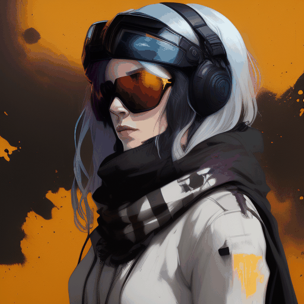
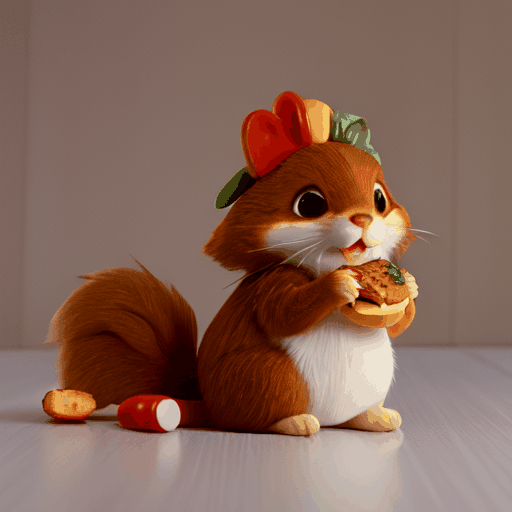

AnimateDiff: Animate Personalized Image Diffusion Models via a Tuning-free Framework
[Arxiv] [Github repo] [BibTeX]



Generated with CivitAI models: ToonYou Lyriel majicMIX Realistic RCNZ Cartoon 3d
[Arxiv] [Github repo] [BibTeX]
Generated with CivitAI models: ToonYou Lyriel majicMIX Realistic RCNZ Cartoon 3d
Abstract
Generating personalized animation clips is challenging due to the training costs and data collection. Existing text-to-video (T2V) generators are mostly trained with daily video like WebVid-10M and can only generate domain-specific animations with designed textual prompts. In this report, we take one step forward to the above target via solving a newly proposed problem setting, i.e., animating a text-to-image (T2I) model personalized for a specific domain, considering tuning a personalized image model is much cheaper than training in video domain. Our method first trains a motion modeling module inserted into the base T2I model with video data while freezing the original model weight unchanged. At inference time, the module is plugged into another personalized version of the base T2I model. Our key observations are: 1) T2I models are able to generate consistent content without updating their parameters; 2) tuning-based personalization methods scarcely modify the feature space of the base model, which ensures the generalizability of our pre-trained motion modeling module. Our extensive experiments demonstrate our method's effectiveness and its remarkable results.
Pipeline
Large text-to-image models achieved a remarkable leap in the evolution of AI, enabling high-quality and diverse synthesis of images from a given text prompt. However, these models lack the ability to mimic the appearance of subjects in a given reference set and synthesize novel renditions of them in different contexts.

Large text-to-image models achieved a remarkable leap in the evolution of AI, enabling high-quality and diverse synthesis of images from a given text prompt. However, these models lack the ability to mimic the appearance of subjects in a given reference set and synthesize novel renditions of them in different contexts. Large text-to-image models achieved a remarkable leap in the evolution of AI, enabling high-quality and diverse synthesis of images from a given text prompt. However, these models lack the ability to mimic the appearance of subjects in a given reference set and synthesize novel renditions of them in different contexts.
Gallery
Large text-to-image models achieved a remarkable leap in the evolution of AI, enabling high-quality and diverse synthesis of images from a given text prompt. However, these models lack the ability to mimic the appearance of subjects in a given reference set and synthesize novel renditions of them in different contexts.
Model: ToonYou
Model: Counterfeit V3.0
Model: Realistic Vision V2.0
Model: majicMIX Realistic
BibTex